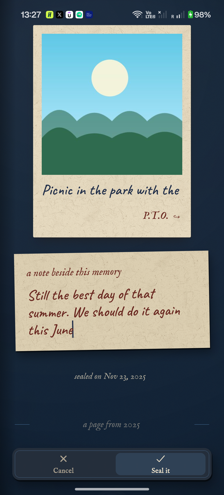
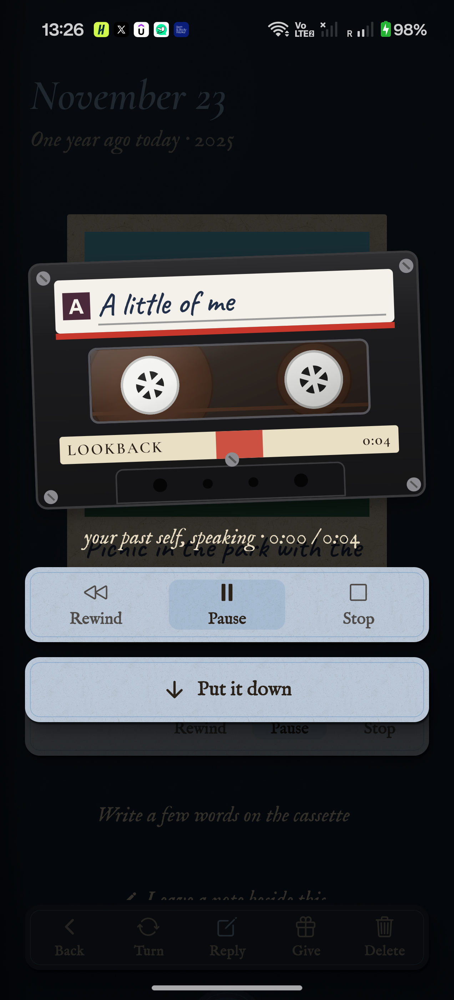
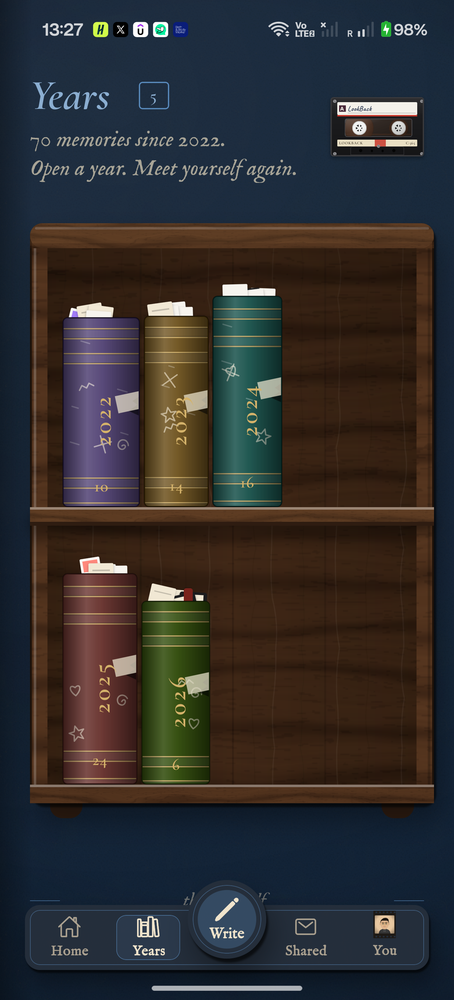
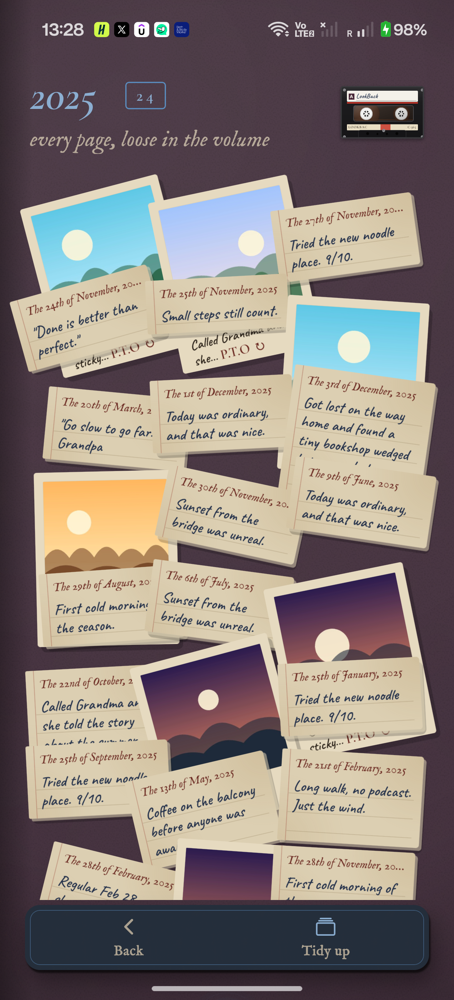
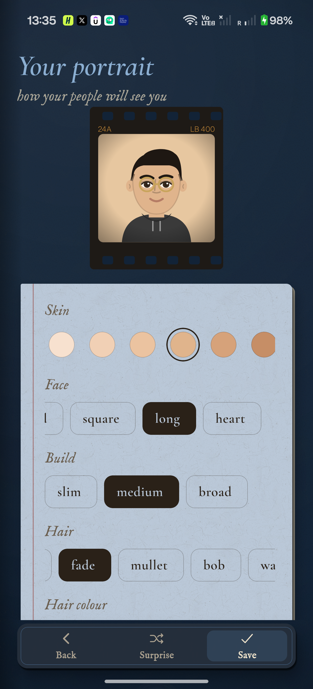
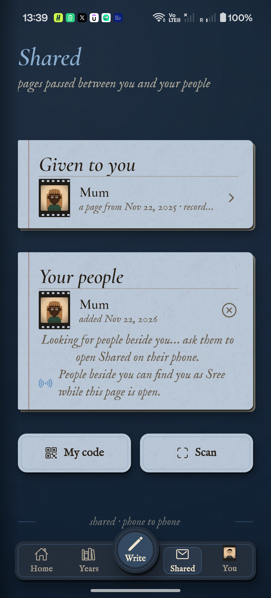
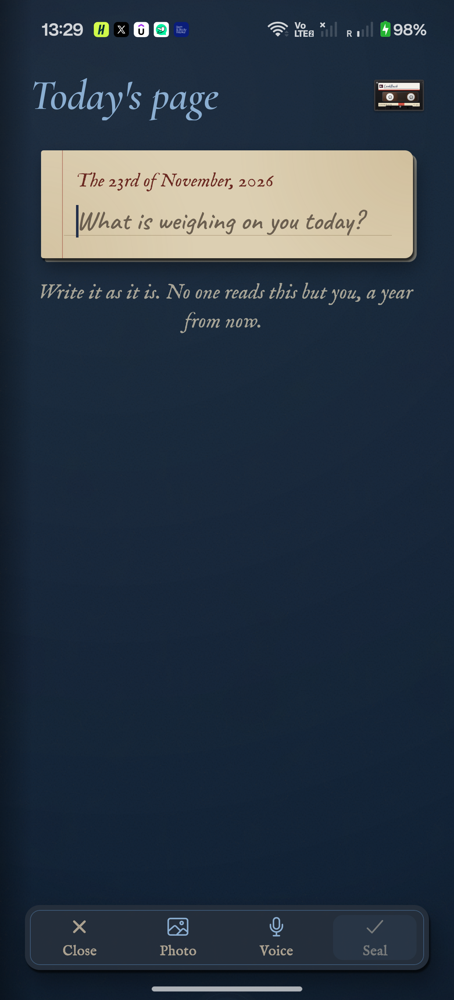
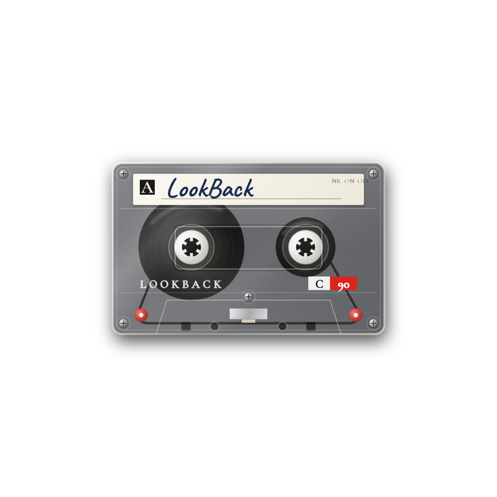
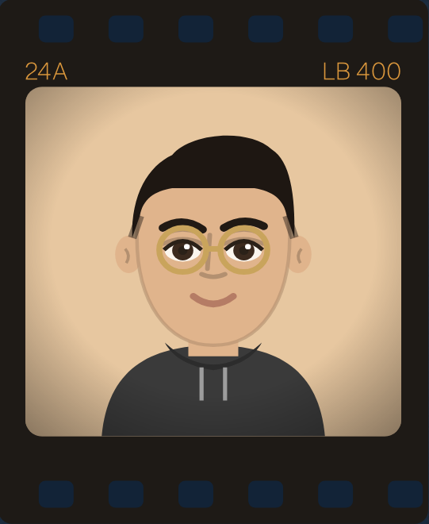

A letter from
last year
the same day, one year ago ✉
Then write
back
answer your past self, in sepia ink
Your voice,
on tape
up to a minute, played on a little recorder
A diary for
every year
each one its own book on the shelf
Meet yourself
again
open a year, and every page is there
Draw your
portrait
skin, hair, glasses, film stock · all yours
Give a page to
someone
phone to phone, encrypted, never on a server
Yours, and
only yours
no adsno trackingyour own Drive








2025
to: me, today
from: past me
from: past me
a year later, you wrote back:
still the best day of that summer. let’s do it again in June ♡

2023
2024
2025
the bookshop day ♡

for: Mum ♡